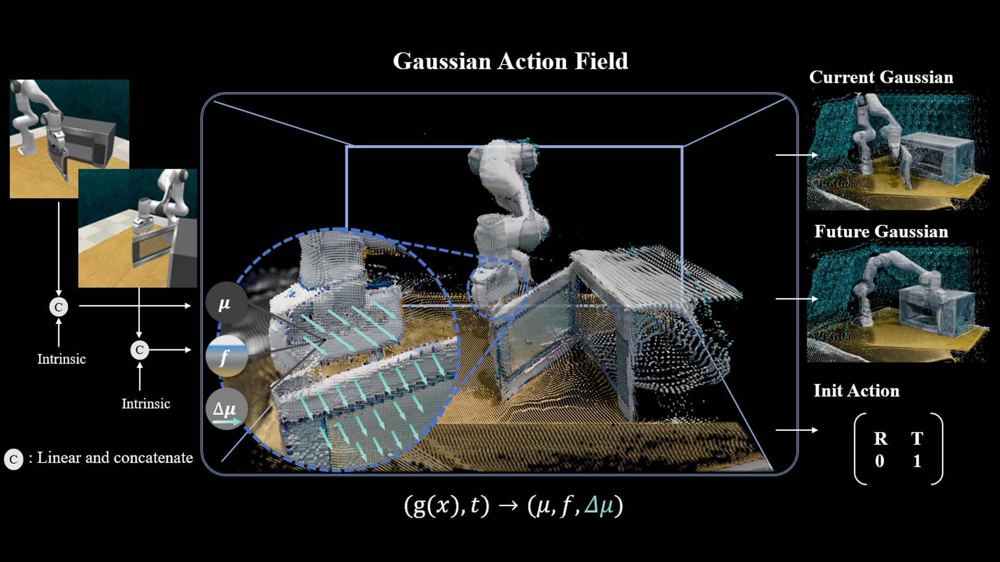

|
Ying Chai (柴颖) Ph.D. student Tsinghua University Beijing, China Email:chaiy25@mails.tsinghua.edu.cn Google Scholar • GitHub • WeChat • |
|
|
News
 |
GAF: Gaussian Action Field as a 4D Representation for Dynamic World Modeling in Robotic Manipulation |
Honors and Awards